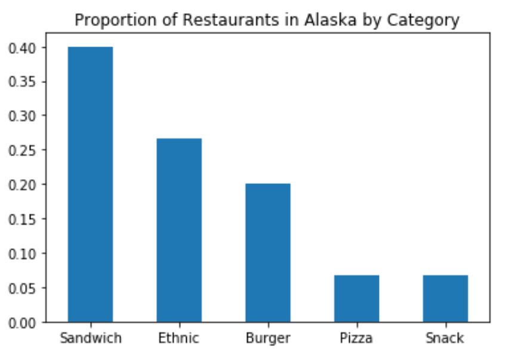

1. Despite living near America’s longest coastline, Alaskans don’t favor fish for their fast food. The biggest seller in America’s biggest state is the sandwich, which make up a quarter of Alaska’s fast food eateries.

Alaskans favor sandwiches for their fast food.
Given that Subway has the most locations by far of any fast food restaurant, this is plausible, but the data isn’t conclusive. In our dataset, there are only six sandwich shops in the state, and only 15 Alaskan restaurants overall.
2. Who does favor seafood? Turns out it’s a state 1,800 miles from the Pacific Ocean and 800 miles from the Atlantic. Indiana is the place to go if you want a quick meal of fish and chips.
Indiana is where seafood is most popular.
Indiana does have the most seafood restaurants in our dataset. However, it only has eight, and other states quickly decline in number. Connecticut, number 15, has only one seafood restaurant. Our dataset shows zero seafood restaurants for 25 of the 50 states.
3. Hawaiians love burgers even more than mainlanders do. About 83% of Hawaii’s fast-food restaurants are burger joints.
Hawaiians have the highest proportion of burger restaurants in all states.
This falls into the “doubtful” category, given that Hawaiians have to import beef. Note that none of Hawaii’s fast food restaurants serve seafood, which is implausible. The data for Hawaii is thin, with only 31 restaurants listed, so we can’t draw any conclusions from it.
4. Starbucks may be Seattle-born, but it has embedded itself deep in the heart of Texas. The Lone Star State boasts the largest number of Starbucks of any state in the U.S.
Texas has the most Starbucks chains.
This seems plausible, as Texas is the second-largest state by population, but we can’t determine that from a dataset that only contains four Starbucks locations. There’s no graphic on the previous page because there’s no way to hide the dearth of data once numbers get involved.
5. New York, Chicago, and Detroit may argue over who has the best pizza, but their respective states don’t have the most pizza joints per capita. Tiny Rhode Island wins the pizza war: it has the greatest density of pizza restaurants in the United States.
Rhode Island has the greatest density of pizza restaurants.
Dividing restaurant numbers in our dataset by population puts Rhode Island in the lead in per- capita pizza places. It’s possible that Rhode Island actually has the greatest density of pizza restaurants, but it’s not possible to determine that from a dataset where Rhode Island has three pizza restaurants out of a total of 14 restaurants.
6. Chick-Fil-A has managed to cross the Florida-Georgia line when it comes to popularity. Florida leads the U.S. in the number of Chick-Fil-A restaurants.
Chick-Fil-A has its most locations in Florida.
This is plausible. Florida is the third-most-populous state in the United States and shares a border with Chick-Fil-A’s home state of Georgia. Again, however, the data is not conclusive. While Florida and Texas seem plausible as the top two states where Chick-Fil-A can be found, it is doubtful that Georgia is fifth — especially as it has a larger population than either Virginia or North Carolina.
7. Think that Americans on the West Coast are the most open to diversity in food? Think again. Alabama is the surprise number one; roughly half of the state’s fast-food restaurants are ethnic.
Alabama has the greatest percentage of ethnic restaurants.
This is a fun one for two reasons. First: Alabama is the state with the fewest data points in our dataset.
Second: What does “ethnic” mean? According to the fast food industry, this category includes any restaurant with the word “taco” in it.
Yes, Taco Bell counts as ethnic. It’s also a dominant part of our dataset, with 1,036 of its total 6,278 locations present, giving us 16.5% of all Taco Bells in existence. This is a good number from which to draw conclusions. By comparison, a mere 3.2% of Subway locations are present, making it harder to make accurate claims about that chain. The problem with our Taco Bell data is that showing only three Taco Bells in a state doesn’t tell us enough to make a definitive claim about that state.
Our conclusion: it’s plausible that Alabama has the greatest percentage of Taco Bells of any state in the U.S. but completely implausible that Taco Bell is an ethnic restaurant.
The lesson here is that you can have good (accurate) data that ends up not being very good for analysis because of its incompleteness. If we were able to take multiple random samples from the overall dataset, we could start to make some claims about the population as a whole. As it is, we can only speculate.